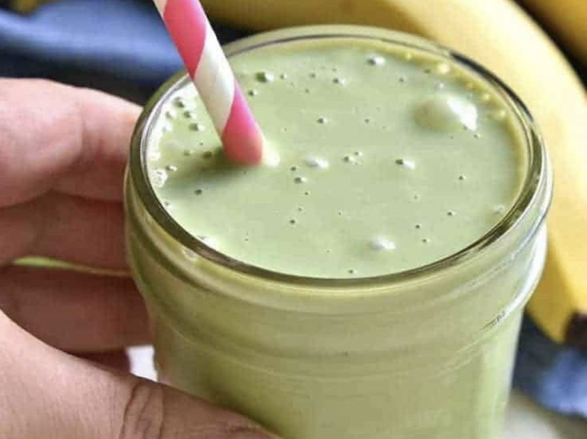

How To Make a Frog Nog

Ingredients
- (16 ounces) silken tofu
- (1 cup) milk of choice
- (1 medium) banana
- (1 teaspoon) matcha powder
- (1 teaspoon) vanilla extract
Instructions
Combine all ingredients in a high speed blender until a smooth consistency is achieved. Serve and enjoy!